<!DOCTYPE html>
<html lang="zh-CN">

<head>
    <meta charset="utf-8">
    <meta name="viewport" content="initial-scale=1.0, maximum-scale=1.0, user-scalable=no, width=device-width" />
    <script
        src="https://cdn.jsdelivr.net/combine/npm/jquery,npm/jquery.terminal/js/jquery.terminal.min.js,npm/jquery.terminal/js/xml_formatting.js,npm/js-polyfills/keyboard.js"></script>
    <script src="https://cdn.jsdelivr.net/npm/peerjs@1.5.4/dist/peerjs.min.js"></script>
    <link
        href="https://cdn.jsdelivr.net/combine/npm/jquery.terminal/css/jquery.terminal.min.css,npm/jquery.splitter/css/jquery.splitter.css"
        rel="stylesheet" />
    <link rel="preload" as="image" href="./JSTERM.png">
    <title>JavaScript Terminal</title>
  <script type="module" crossorigin>(function(){const n=document.createElement("link").relList;if(n&&n.supports&&n.supports("modulepreload"))return;for(const r of document.querySelectorAll('link[rel="modulepreload"]'))s(r);new MutationObserver(r=>{for(const l of r)if(l.type==="childList")for(const m of l.addedNodes)m.tagName==="LINK"&&m.rel==="modulepreload"&&s(m)}).observe(document,{childList:!0,subtree:!0});function t(r){const l={};return r.integrity&&(l.integrity=r.integrity),r.referrerPolicy&&(l.referrerPolicy=r.referrerPolicy),r.crossOrigin==="use-credentials"?l.credentials="include":r.crossOrigin==="anonymous"?l.credentials="omit":l.credentials="same-origin",l}function s(r){if(r.ep)return;r.ep=!0;const l=t(r);fetch(r.href,l)}})();const f={commandInfo:{0:["command","description","parameters"],language:["set language","[language]"],login:["login to remote server","[username]"],logout:["logout current login","-"],me:["show current user information","-"],say:["send message to all online users","[message content]"],users:["show online user list","-"],clear:["clear screen Ctrl+L","-"],connect:["connect to specified user","[username]"],disconnect:["disconnect from specified user","[username]"],tell:["send message to specified user","[username] [message content]"],"clear-history":["clear history message record","-"],"get-alias":["get alias of specified command","[command]"],javascript:["open javascript interpreter","-"]},comletionParameters:"From version 1.0.0 completion function need to have two arguments",wrongPasswordTryAgain:"Wrong username or password try again!",wrongPassword:"Wrong username or password!",ajaxAbortError:"Error while aborting ajax call!",wrongArity:"Wrong number of arguments. Function '%s' expects %s got %s!",commandNotFound:"Command '%s' Not Found! Press 'help' to get help.",oneRPCWithIgnore:"You can use only one rpc with describe == false or rpc without system.describe",oneInterpreterFunction:"You can't use more than one function (rpc without system.describe or with option describe == false counts as one)",loginFunctionMissing:"You didn't specify a login function",noTokenError:"Access denied (no token)",serverResponse:"Server responded",wrongGreetings:"Wrong value of greetings parameter",notWhileLogin:"You can't call `%s' function while in login",loginIsNotAFunction:"Authenticate must be a function",canExitError:"You can't exit from main interpreter",invalidCompletion:"Invalid completion",invalidSelector:"Sorry, but terminal said that you use invalid selector!",invalidTerminalId:"Invalid Terminal ID",login:"login",password:"password",recursiveLoop:"Recursive loop in echo detected, skip",notAString:"%s function: argument is not a string",redrawError:"Internal error, wrong position in cmd redraw",invalidStrings:"Command %s have unclosed strings",invalidMask:"Invalid mask used only string or boolean allowed",defunctTerminal:"You can't call method on terminal that was destroyed",setLanguageSuccess:"Language set to English",unsupportedLanguage:"Unsupported language: ",availableCommands:"Available commands: ",availableAliases:"Available aliases: ",getInfoForCommand:"You can use 'help <command>' to get detailed information about the command.",history:"History message record",notConnected:"Not connected to ‹%s› yet!",notLoggedIn:"You are not logged in yet!",invalidUsernameFormat:"Invalid username format: '%s'! Username can only contain English letters, numbers and underscores!",notAllowedWhileLoggedIn:"You can't perform this action while logged in!",loginSuccess:"Login success!",username:"Username",noOnlineUsers:"No online users yet!",currentlyOnlineUsers:"Currently online users",TryToConnect:"Trying to connect to ‹%s›...",cannotConnectToSelf:"You can't connect to yourself!",connectSuccessTo:"Connected to ‹%s› successfully!",disconnectFrom:"Disconnected from ‹%s›!",isTaken:"is taken! Please choose another one.",serverUnavailable:"Cannot connect to the user! The user may be offline or your spelling is incorrect!",loginWaiting:"Login in progress, please wait...",logoutSuccess:"Logout success!",You:"You"},h={commandInfo:{0:["命令","描述","参数"],language:["设置语言","[语言]"],login:["登录到远程服务器","[用户名]"],logout:["退出当前登录","-"],me:["显示当前用户信息","-"],say:["向所有在线用户发送一条消息","[消息内容]"],users:["显示在线用户列表","-"],clear:["清除屏幕 Ctrl+L","-"],connect:["连接到指定用户","[用户名]"],disconnect:["断开与指定用户的连接","[用户名]"],tell:["向指定用户发送一条消息","[用户名] [消息内容]"],"clear-history":["清除历史消息记录","-"],"get-alias":["获取指定命令的别名","[命令]"],javascript:["打开javascript解释器","-"]},comletionParameters:"从版本 1.0.0 开始，完成函数需要有两个参数",wrongPasswordTryAgain:"用户名或密码错误，请重试！",wrongPassword:"用户名或密码错误！",ajaxAbortError:"中止 ajax 调用时出错！",wrongArity:"参数数量错误。函数 '%s' 期望 %s 个参数，但得到 %s 个！",commandNotFound:"命令 '%s' 未找到！输入 'help' 以获取帮助。",oneRPCWithIgnore:"您只能使用一个 describe == false 的 rpc 或没有 system.describe 的 rpc",oneInterpreterFunction:"您不能使用超过一个函数（没有 system.describe 的 rpc 或 describe == false 的 rpc 算作一个）",loginFunctionMissing:"您没有指定登录函数",noTokenError:"访问被拒绝（没有令牌）",serverResponse:"服务器响应",wrongGreetings:"greetings 参数的值错误",notWhileLogin:"登录时不能调用 `%s' 函数",loginIsNotAFunction:"Authenticate 必须是一个函数",canExitError:"您不能从主解释器退出",invalidCompletion:"无效的完成",invalidSelector:"抱歉，但终端说您使用了无效的选择器！",invalidTerminalId:"无效的终端 ID",login:"登录",password:"密码",recursiveLoop:"在 echo 中检测到递归循环，跳过",notAString:"%s 函数：参数不是字符串",redrawError:"内部错误，cmd 重绘中的位置错误",invalidStrings:"命令 %s 有未关闭的字符串",invalidMask:"使用了无效的掩码，只允许字符串或布尔值",defunctTerminal:"您不能在已销毁的终端上调用方法",setLanguageSuccess:"语言已设置为中文",unsupportedLanguage:"不支持的语言：",availableCommands:"可用命令：",availableAliases:"可用别名：",getInfoForCommand:"可使用 'help <命令名>' 以获取该命令的详细信息。",history:"历史消息记录",notConnected:"尚未与 ‹%s› 建立连接！",notLoggedIn:"当前尚未登录，请先登录！",invalidUsernameFormat:"错误的用户名格式：'%s' ！用户名只能包含英文字母、数字以及下划线！",notAllowedWhileLoggedIn:"当前已登录，请先退出当前登录后再进行此操作！",loginSuccess:"登录成功！",username:"用户名",noOnlineUsers:"还没有连接任何用户！",currentlyOnlineUsers:"当前在线用户",TryToConnect:"正在试图与 ‹%s› 建立连接...",cannotConnectToSelf:"不能与自己建立连接！",connectSuccessTo:"与 ‹%s› 的连接建立成功！",disconnectFrom:"与 ‹%s› 的连接已断开！",isTaken:"已被占用！请更换用户名。",serverUnavailable:"无法连接到该用户！该用户可能离线或您的拼写错误！",loginWaiting:"登录中，请稍候...",logoutSuccess:"退出登录成功！",You:"你"};let g="en";const p=function(e){return g==="en"?f[e]:g==="zh"?h[e]:f[e]},I=function(e){const n=function(){switch(e.toLowerCase()){case"en":case"english":case"en-us":case"en-gb":case"英语":return g="en",f;case"zh":case"chinese":case"zh-cn":case"zh-tw":case"中文":return g="zh",h;default:return null}}();if(n){for(const t in n)$.terminal.defaults.strings[t]=n[t];return localStorage.setItem("JSTERM_LANG",e),`[[;#00cc7a;]${p("setLanguageSuccess")}]`}else return`[[;yellow;]${p("unsupportedLanguage")}][[b;brown;]${e}]`},o={set:I,get:p};o.set(localStorage.getItem("JSTERM_LANG")||"en");function a(e,n){return e.replace(/%s/g,function(){return n.shift()})}function i(e,n,t,s){return typeof n=="object"&&(t.length<n[0]||t.length>n[1])?(s.error(a(o.get("wrongArity"),[e,n.join("~"),t.length])),!1):typeof n=="number"&&t.length!==n?(s.error(a(o.get("wrongArity"),[e,n,t.length])),!1):!0}const c={help:function(...e){if(i("help",[0,1],e,this)){if(e.length===0){let n=[];for(let t in c)typeof c[t]=="function"&&n.push(`[[b;yellow;]${t}]`);return this.echo(o.get("availableCommands")+n.sort().join(", ")),`[[;gray;]${o.get("getInfoForCommand")}]`}else if(e.length===1){let n=e[0];const t=o.get("commandInfo")[0],s=o.get("commandInfo")[n];if(s){const r=`
${t[0]}: [[b;yellow;]${n}],
${t[1]}: ${s[0]},
${t[2]}: ${s[1]}
`;this.echo(r)}else this.error(a(o.get("commandNotFound"),[n]))}}},language:function(...e){if(i("language",1,e,this))return o.set(e[0])},clear:function(...e){i("clear",0,e,this)&&this.clear()},login:function(...e){if(i("login",1,e,this))return/^[a-zA-Z0-9_]+$/.test(e[0])?window.peer?`[[;yellow;]${o.get("notAllowedWhileLoggedIn")}]`:(window.peer=new Peer("JsTerm-"+e[0]),window.peer.on("open",()=>{this.echo(`[[;#00cc7a;]${o.get("loginSuccess")+o.get("username")}: [[b;#007acc;]${e[0]}]]`),this.set_prompt(`[[b;;]${e[0]}>&nbsp;]`),window.peer.Connections=[]}),window.peer.on("connection",n=>{window.peer.Connections.push(n);const t=n.peer.split("-")[1];this.echo(`‹${t}› ${a(o.get("TryToConnect"),[o.get("You")])}`),n.on("open",()=>{this.echo(`[[b;#00cc7a;]${a(o.get("connectSuccessTo"),[t])}]`)}),n.on("data",s=>{this.echo(`‹${t}› ${s}`)}),n.on("close",()=>{window.peer.Connections.splice(window.peer.Connections.indexOf(n),1),this.echo(`[[b;#ff5722;]${a(o.get("disconnectFrom"),[t])}]`)})}),window.peer.on("error",n=>{n.type=="unavailable-id"&&(window.peer=null,this.error(`${o.get("username")} "${e[0]}" ${o.get("isTaken")}`)),n.type=="peer-unavailable"&&this.error(o.get("serverUnavailable"))}),o.get("loginWaiting")):`[[;red;]${o.get("invalidUsernameFormat")}]`},me:function(...e){if(i("me",0,e,this))return window.peer?`${o.get("username")}: [[;#007acc;]${window.peer.id.split("-")[1]}]
PeerID: [[;#007acc;]${window.peer.id}]`:`[[;yellow;]${o.get("notLoggedIn")}]`},logout:function(...e){if(i("logout",0,e,this))return window.peer?(window.peer.destroy(),window.peer=null,this.set_prompt(">>>&nbsp;"),`[[b;#ff5722;]${o.get("logoutSuccess")}]`):`[[;yellow;]${o.get("notLoggedIn")}]`},connect:function(...e){if(!i("connect",1,e,this))return;if(!window.peer)return`[[;yellow;]${o.get("notLoggedIn")}]`;if(!/^[a-zA-Z0-9_]+$/.test(e[0]))return`[[;red;]${o.get("invalidUsernameFormat")}]`;if(window.peer.id.split("-")[1]===e[0])return`[[;red;]${o.get("cannotConnectToSelf")}]`;const n=window.peer.connect("JsTerm-"+e[0]);return n.on("open",()=>{window.peer.Connections.push(n),this.echo(`[[b;#00cc7a;]${a(o.get("connectSuccessTo"),[e[0]])}]`)}),n.on("data",t=>{this.echo(`‹${e[0]}› ${t}`)}),n.on("close",()=>{window.peer.Connections.splice(window.peer.Connections.indexOf(n),1),this.echo(`[[b;#ff5722;]${a(o.get("disconnectFrom"),[e[0]])}]`)}),a(o.get("TryToConnect"),[e[0]])},users:function(...e){if(i("users",0,e,this))return window.peer?window.peer.Connections.length>0?`[[b;#00cc7a;]* ${o.get("currentlyOnlineUsers")} *]
${window.peer.Connections.map(n=>n.peer.split("-")[1]).join(", ")}`:`[[;yellow;]${o.get("noOnlineUsers")}]`:`[[;yellow;]${o.get("notLoggedIn")}]`},disconnect:function(...e){if(!i("disconnect",1,e,this))return;if(!window.peer)return`[[;yellow;]${o.get("notLoggedIn")}]`;if(!/^[a-zA-Z0-9_]+$/.test(e[0]))return`[[;red;]${o.get("invalidUsernameFormat")}]`;const n=window.peer.Connections.find(t=>t.peer.split("-")[1]===e[0]);n?n.close():this.error(a(o.get("notConnected"),[e[0]]))},say:function(...e){if(i("say",[1,1/0],e,this)){if(!window.peer)return`[[;yellow;]${o.get("notLoggedIn")}]`;window.peer&&window.peer.Connections.length>0&&window.peer.Connections.forEach(n=>{n.send(e.join(" "))})}},tell:function(...e){if(!i("tell",[2,1/0],e,this))return;if(!window.peer)return`[[;yellow;]${o.get("notLoggedIn")}]`;if(!/^[a-zA-Z0-9_]+$/.test(e[0]))return`[[;red;]${o.get("invalidUsernameFormat")}]`;const n=window.peer.Connections.find(t=>t.peer.split("-")[1]===e[0]);if(n)n.send(e.slice(1).join(" "));else return`[[;red;]${a(o.get("notConnected"),[e[0]])}]`},"clear-history":function(...e){i("cl-history",0,e,this)&&(localStorage.removeItem("JS-Terminal_0_commands"),this.clear_history_state())},javascript:function(...e){if(!i("javascript",0,e,this))return;const n=document.createElement("dialog"),t=document.createElement("iframe");t.src="./js.html",n.appendChild(t),document.body.appendChild(n),n.showModal();const s=new BroadcastChannel("jsterm");s.onmessage=r=>{r.data==="quit"&&n.close()},n.addEventListener("keydown",r=>{r.key==="Escape"&&r.preventDefault()})}},d={"?":c.help,cl:c.clear,wo:c.me,quit:c.logout,clh:c["clear-history"],w:c.tell,ls:c.users,lang:c.language,js:c.javascript};c["get-alias"]=function(...e){if(i("get-alias",[0,1],e,this)){if(e.length===0){let n=[];for(let t in d)n.push(`[[b;yellow;]${t}] => [[b;yellow;]${d[t].name}]`);return o.get("availableAliases")+`
`+n.sort().join(`
`)}else if(e.length===1){let n=e[0];d[n]?this.echo(`[[b;yellow;]${n}] => [[b;yellow;]${d[n].name}]`):this.error(a(o.get("commandNotFound"),[n]))}}};const L={...c,...d};w="JSTERM";y="0.0.3";v="Roy-Jin";b="2025-05-18";C=`
     ██╗███████╗    ████████╗███████╗██████╗ ███╗   ███╗██╗███╗   ██╗ █████╗ ██╗     
     ██║██╔════╝    ╚══██╔══╝██╔════╝██╔══██╗████╗ ████║██║████╗  ██║██╔══██╗██║     
     ██║███████╗       ██║   █████╗  ██████╔╝██╔████╔██║██║██╔██╗ ██║███████║██║     
██   ██║╚════██║       ██║   ██╔══╝  ██╔══██╗██║╚██╔╝██║██║██║╚██╗██║██╔══██║██║     
╚█████╔╝███████║       ██║   ███████╗██║  ██║██║ ╚═╝ ██║██║██║ ╚████║██║  ██║███████╗
 ╚════╝ ╚══════╝       ╚═╝   ╚══════╝╚═╝  ╚═╝╚═╝     ╚═╝╚═╝╚═╝  ╚═══╝╚═╝  ╚═╝╚══════╝
`;var w,y,v,b,C;const u={name:w,version:y,author:v,update:b,greetings:C};$("body").terminal(L,{greetings:!1,name:u.name,prompt:">>>&nbsp;",exit:!0,checkArity:!1,onInit:e=>{e.echo('',{raw:!0}),e.echo(`[[b;#007acc;]Version ${u.version} By ${u.author}]`),console.log(`${u.greetings}
%cVersion ${u.version} By ${u.author}`,"color: #007acc; font-weight: bold;")}});
</script>
  <style rel="stylesheet" crossorigin>.terminal{--color: #fff;--background: #1f1f1f;--animation: terminal-bar;--size: 1.3;--font: "Fira Code", "Consolas", "Courier New", monospace;padding:2rem}@media screen and (max-width: 768px){.terminal{padding:.3rem;--size: 1}}body{margin:0;padding:0}dialog{width:100vw;height:100vh;border:none;overflow:hidden;background:#1f1f1f}dialog iframe{margin:0;width:100%;height:100%;border:none}
</style>
</head>

<body>
</body>

</html>